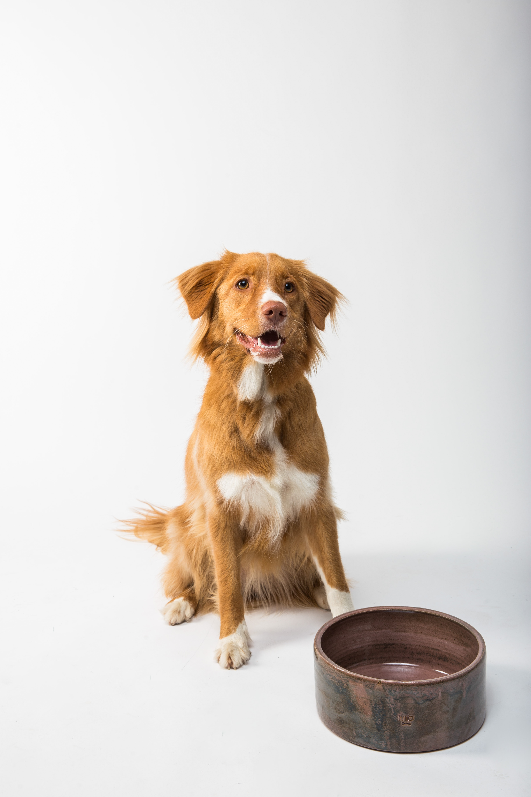

Cat
Cats are cherished for their independent nature,
soft companionship, and soothing purrs that bring comfort.
Their playful antics and graceful movements captivate,
while their grooming habits symbolize self-care and relaxation.
Cats' ability to form deep bonds with humans,
adds to their appeal as beloved pets.
Learn More

Bird
I cherish Birds for their colorful plumage,
melodious songs symbolizing freedom, and their role in bridging cultures and seasons.
Observing their behaviors offers insights into nature, and their adaptability to urban life,
along with low maintenance needs, makes them beloved companions.
Their intelligence, personalities.
Learn More

Dog
I do adore dogs for their loyal companionship,
unconditional affection, playfulness, and innate protective instincts.
Dogs also offer therapeutic relief from stress, teach responsibility,
and create lasting bonds. These qualities make them cherished and
valued members of families around the world.
Learn More